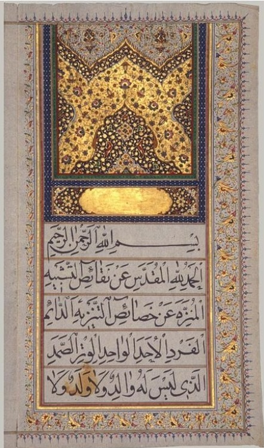
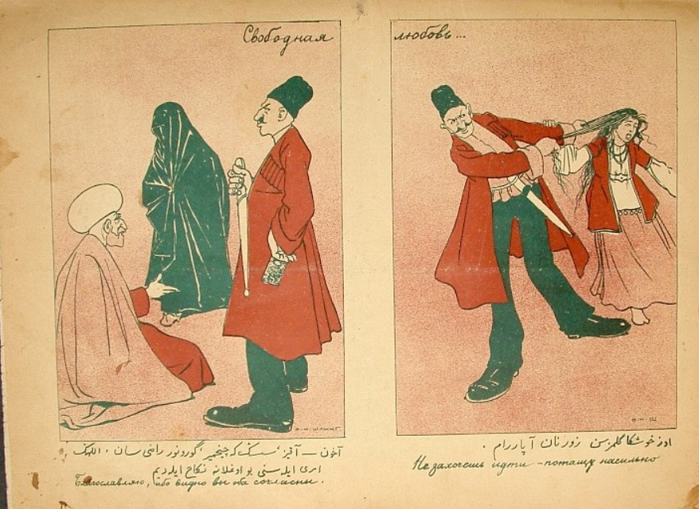
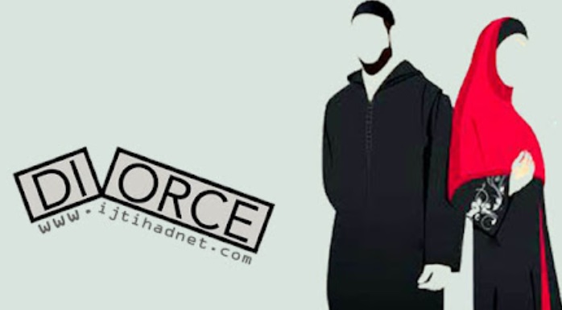
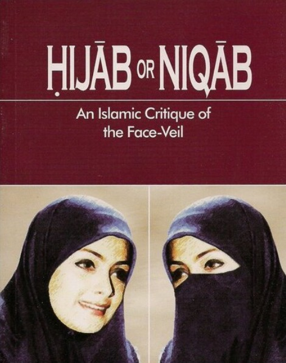
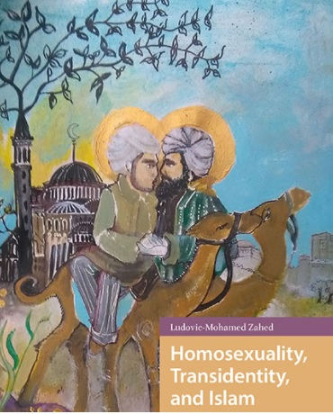
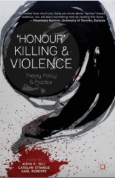

Gender and sexuality are parts of the natural identity of human beings that has been given ample attention within socio-cultural and political studies. Religious studies contribute towards clarifying the positions of various religions on gender-related injunctions, justifying concepts and interpreting texts that address human sexuality. Human males and females are each endowed with sets of features some of which are largely identical, while others are distinguishing characteristics. Certain features of gender apparently affect the sexuality of both the male and the female to varying degrees, while socio-cultural factors influence sexual be haviour, drive, activities and orientation, as well as gender relation, dress, rights and the sense of responsibility.
In the early 7th century up to the present day, women have played a vital role in shaping Islamic history. However, their voices have often been left out of standard historical narratives, silenced by a lack of primary sources as well as an assumed belief by male historians that they were not part of the development of Islamic civilizations. Looking past this bias, scholars may find many valuable sources to uncover the significant contributions of women to Islamic history, revealing their work alongside men throughout the centuries.
Muslim culture has a built-in ideological blindness to the economic dimension of women, who are ordinarily perceived, conceived and defined as exclusively sexual objects. The female body has traditionally been the object of an enormous erotic investment, which has clouded (if not totally hidden) woman's economic dimensions" (1984: 16-17). In addition, it has led to the general eroticization of relations between the sexes. As a result of this, working outside the home by women is often experienced as erotic aggression.
The following are the Root Cause of the Gender and Sexuality Issues:
|  |
Marriage Contracts - Muslim marriage is a contract, not a sacrament. Though it has importance as the only religiously sanctioned way for individuals to have legitimate sexual relationships and to procreate (now that slave-concubinage is no longer practiced), marriage is a civil agreement, entered into by two individuals or those acting on their behalf. (Read more about consent and forced marriage.) And because it is a contract (‘aqd), it conveys legal rights and obligations to each spouse. This brief essay will discuss those rights along with the crucial issues of how and whether they can be modified through contractual stipulations (shurut, sing. shart). The focus here is on “Islamic law” in the sense of jurisprudence (fiqh), and not, it should be stressed, on what Islamic marriage ideally should be according to the Qur’an or prophetic tradition. |
|  |
Consent and Forced Marriage -
For traditional Muslim jurists, as indeed for most societies in the pre-modern world, marriage was not primarily about the free choice of life partners by individuals, though an element of individual choice was recognized. Rather, it was about the selection of suitable spouses by families. To that end, a type of guardianship (wilaya) for marriage is a critical element of the marriage regulations the early jurists devised. Two types of guardians (wali, sing.) are distinguished, though both have to be adult, male, Muslim, free, and sane. First, a father (and possibly, under certain circumstances, a paternal grandfather) is considered to have the power to compel marriages, referred to as jabr or ijbar. Second, in the absence of a father, another guardian is required under certain circumstances for the validity of the marriage, but he may not force his charge to marry.
|
|  |
Divorse -
Though it has religious dimensions, Muslim marriage is a contract. While it can persist until the death of one of the parties, it can also be dissolved before that time. When there is disharmony between spouses, divorce should not be the first solution. The Qur’an promotes reconciliation, through negotiated settlements between the spouses themselves or the use of arbitrators from their families. However, when “mutual good treatment” is not possible, there should be an amicable parting. Thus, the Qur’an treats divorce as something permitted but not laudable. Reflecting this sentiment, it is reported that the Prophet Muhammad said that of all things permitted, divorce is the most hated by God.
|
|  |
Veiling and the Hijab -
No symbol is so linked to Muslim women as that of “the veil.” Whether a simple headscarf or a head-to-toe cover such as the chaddor or burka, Muslim women’s covered dress has meaning for many far beyond its simple use as clothing. Those who advocate “Islamic dress” stress it as crucial to Muslim women’s modesty; it also signifies adherence to what they understand to be scriptural and prophetic requirements. Others, including many non-Muslims but also some Muslims, understand covered dress to symbolize – and even constitute a form of – women’s oppression. Much has been written about various forms of dress and the history of veiling and unveiling in various parts of the Muslim world, and there is no scholarly consensus as to how it affects women.
|
|  |
Same-Sex Sexual Activity & Lesbian and Bisexual Women -
Same-sex sexual activity is a taboo subject for many Muslims. Some go so far as to deny that gay men, lesbians, and bisexuals exist in Muslim societies today or even that sexual activity between men or between women has existed in Islamic history. Rather, they claim that such issues are “western” or “modern.” Those who do acknowledge the topic generally agree that the Qur’an explicitly forbids all same-sex sexual activity and that Islamic law prescribes dire punishments for it. Thus, in dealing with same-sex sexual behavior among Muslims, there are two key issues: First, what is practiced? Answering this question involves determining what the historical role of lesbian women and female same-sex sexual behavior, for example, has been. Second, and more importantly for contemporary Muslims grappling with the issues raised by same-sex attractions, what is permissible? Just because some Muslims in the past have behaved in a certain way does not mean it is religiously legitimate to do so. This essay will briefly address the first question of past practice, then turn to a discussion of permissibility.
|
|  |
Honor Killings, Illicit Sex, & Islamic Law -
Intimate violence against women is a worldwide crisis. From “crimes of passion” to “dowry deaths,” not to mention domestic violence, many types of aggression against women occur at the hands of family members. The so-called “honor killing” of women and girls in some Muslim nations is one horrifying manifestation of this global phenomenon. Some have viewed honor killings as a logical extension of traditional Islamic gender practices, the natural consequence of a system that enforces sex segregation through veiling and female seclusion and harshly punishes violations of these boundaries. Others have argued that honor killings are the antithesis of Islamic morality. This latter view is essentially correct from the perspective of Qur’an, prophetic traditions (hadith), and Islamic legal thought, as a careful analysis of the relevant texts shows.
|